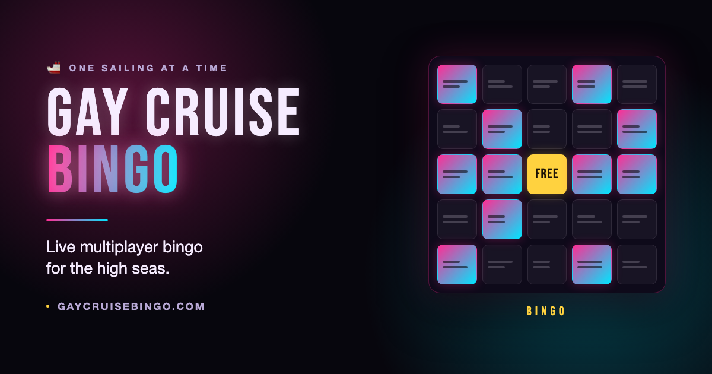
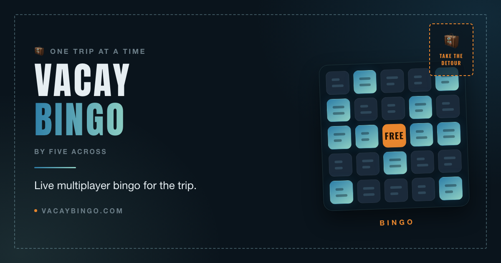
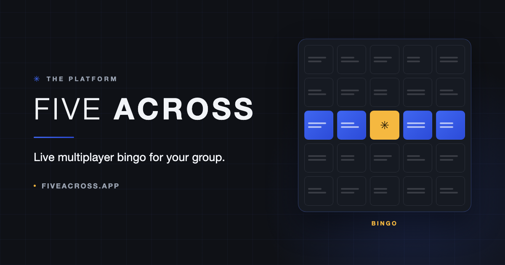

One platform, three identities, every surface labeled. Five Across (fiveacross.app, general register, minimal camp, share mark ✳️) is the platform; Gay Cruise Bingo (gaycruisebingo.com, cruise register, full camp, 🚢) and Vacay Bingo (vacaybingo.com, trip register, moderate camp, 🧳) are Editions of it. Every frame opens with a brand chip naming the identity it renders and carries a stable anchor of the form #fx-<surface>-<brand>; pre-rename ids from earlier revisions of this doc still resolve as aliases. Wording follows the signed-off Edition lexicon (#608)—registers, wordmarks, share marks and per-surface tables are binding; the Five Across palette is proposed.
Canvas: iPhone 15 Pro—393×852 pt (19.5:9), Safari baseline, with Dynamic Island and home indicator. Installed-PWA frames run standalone (no browser chrome); the install-nudge frame shows Safari’s bottom bar, since that’s the only moment players see it. Every frame is painted with the actual theme tokens from src/theme/themes.css (the two tutorial themes, the three Bodega day themes and fiveacross-slate use the palettes proposed in the specs). Marked squares use the app’s real linear-gradient(--primary, --secondary) fill with --on-gradient text. The header always shows today’s port and theme on two lines; the board area retints to the viewed Day.
Five Across is the Brand—the platform. Gay Cruise Bingo and Vacay Bingo are Editions of it (#532 / #608). The platform is confident and neutral; the Editions carry the camp. Everything below the chrome—the grid, marking, tally, Doubts, the tab set, the admin console—is one product; what an Edition owns is its lockup, its palette, its imagery, its prompt language and its register. These three cards are the legend the rest of the doc leans on: every frame carries the brand chip of the identity it renders, and every anchor ends in -gcb, -vacay or -fa. Wording is governed by the signed-off Edition lexicon (#608); the Five Across palette is proposed—themes.css ships no platform theme yet.
gay-cruise-bingo-*neon-playground.adultContent: true, so the gate draws.vacay-bingo-*bodega-side-quests.adultContent: false, so no gate is drawn.five-across-*fiveacross-slate — slate + signal cobalt, no shipped equivalent in themes.css.The signed-out gate is the only surface a player sees before the app knows anything about them, so it is where the Edition has to carry the whole brand by itself (hostnames/{host}.edition → editionBrand(), ADR 0009). Identical mechanics on all three: wordmark, one tagline, the event in a box, Google sign-in, offline reassurance. What changes is the register (cruise / trip / general), the lockup treatment (glow / postcard / set type), and whether the 18+ attestation is drawn at all—that last one follows hostnames/{host}.adultContent, derived from the Event's pool, not from the Edition (#608 § Dynamic 18+).
Join—the 18+ gate, drawnFull camp: the wordmark keeps its soft glow, the tagline is the shipped gcb string, and the sailing sits in a plain panel rather than Vacay's postcard. New in #688—the BY FIVE ACROSS endorsement line. GCB predates the platform but is now an Edition of it, so it wears the platform's signature exactly as Vacay does, in the same slot: a sibling of the h1, never inside it. An endorsement, not a rename. The wordmark, the cruise register, the adult posture, gaycruisebingo.com and the legacy Firebase project are all untouched—and what GCB still does not take from Vacay is the Join voice: no tagline chip, no invite note, no postcard stamp, because those are separate brand-table fields. At iPhone widths the 16-character wordmark stacks to two lines and the byline centres under it (measured, not eyeballed: scripts/verify-wordmark-one-line.mjs for the header, both iPhone viewports). The attestation is shown because this Event's pool holds active spicy Prompts, so adultContent derives true; sign-in stays disabled (40% here) until the box is ticked, and ticking it persists the attestation through signIn → attest. Splash before this frame reads "Checking your cruise pass…"; the advisory row in More reads "18+ & acceptable use", and the sheet behind it opens "This is an 18+ space for one sailing's friend group."
Join—the postcard, not the casinoArrival through either hostname lands here after canonicalization: one identity, the Vacay lockup with the BY FIVE ACROSS endorsement line, the trip as a postcard (dashed stamp corner), the same Google sign-in. No 18+ attestation—Bodega's pool holds no active spicy Prompts, so adultContent derives false and the button is enabled on load; the same Edition would draw the gate for a spicier trip. Moderate camp: no decorative lead-in emoji, offline stated plainly. One deliberate divergence from the lexicon, flagged, not smuggled: the offline line drawn here is a proposed vacay offlineNote override—the #608 table marks that row unchanged from GCB, but GCB's "Lost signal at sea? The printed cards and PDF still work." would put a cruise noun (and a printed-cards claim no road trip has) on the trip gate. Feed back to #608 before implementation; the annotation table carries the same flag. Splash reads "Checking your trip pass…"; installed-PWA name Vacay Bingo.
Join—the platform, set in typeThe restraint is the differentiation: no glow on the wordmark (.fa-title), one confident hue, sentence case, functional emoji only. The Event is occasion-neutral—name, place, date window—where GCB shows a sailing and Vacay shows a postcard. Offline is promoted out of the footnote into its own dashed banner: a few hundred phones on one cell, behind concrete and structural steel, drops signal harder than a ship does, so the general Edition gets the strongest offline story of the three (#608 § offlineWhy—congestion and barriers named together; jammers never mentioned). No 18+ gate on this Event's tame pool, so the advisory reads "Community guidelines"; see fx-join-gcb for the gate drawn on an Event whose pool derives it. Splash reads "Checking your pass…".
One scrim, once per Event, over the player's first dealt card (src/components/CoachOverlay.tsx): a badge legend, not a tutorial. The mechanics it decodes—tally, Doubt, add-proof, free space—are platform mechanics and read identically on every Edition, which is the honest finding: the overlay itself barely changes. What changes around it is the chrome (wordmark, endorsement line, theme tokens), the Day identity underneath (port / stop / place), and the warm-up banner behind the scrim, whose copy is a per-Edition override rather than a token swap ("all on the ship" / "close to home" / "to warm up"). Replayable from More → How to play; a launch-beat overlay (Reshuffle) queues behind it rather than stacking.
First-open coach overlayShows once per Event, over the player's first dealt card (naturally the embark card for day-one joiners). A badge legend, not a tutorial—the Welcome Aboard banner behind the scrim carries the narrative; this decodes the numbers. Replayable from More → How to play. Cruise register throughout: "all on the ship" in the warm-up banner, 🛳️ in the header.
First open on a trip—same legend, trip registerIdentical overlay mechanics; the Edition shows up in the chrome and the Day underneath. Header names a stop, not a port; the warm-up banner reads "close to home"; the sea-glass/weathered-red day theme retints the whole frame. The coach copy is verbatim CoachOverlay.tsx—it contains no cruise noun, so it needs no per-Edition override, which is exactly the kind of string the #608 sweep should leave alone. Replay entry in More reads "Replay the welcome walkthrough" (GCB keeps "Replay the Welcome Aboard walkthrough").
First open on the platform—the chrome the Editions inheritSame four legend rows, same CTA, same tab set (Card · Feed · Ranks · More, Lucide throughout, avatar on More)—this is the canonical chrome, and GCB and Vacay are it plus a wardrobe. The Day is just a Day ("Day 1 · Welcome"), the header shows a place where GCB shows a port, and the header wordmark drops the glow. Functional emoji only: 👀 and FREE survive because they name badges the player must recognise; nothing decorative gets in. Theme fiveacross-slate is proposed—no shipped equivalent exists in themes.css.
The board and everything a player does on it, drawn three times per surface. These are the mechanics the platform owns outright: the grid, the marked-cell gradient, the tally badge, the Doubt eye, the claim sheet and its segments are byte-identical on every Edition (Board.tsx, ProofSheet.tsx). What changes is the lockup, the palette, and the day framing—Port on Gay Cruise Bingo, Stop on Vacay Bingo, plain Place on Five Across. Where a surface already existed in this doc for Gay Cruise Bingo it is kept verbatim and merely chipped and re-anchored: gcb is the fallback Edition and its rendered chrome must not drift.
Gay Cruise Bingo is drawn ten times over in the Day-by-day gallery (fx-day-1-gcb … fx-day-10-gcb); Vacay Bingo’s Saturday card is fx-card-vacay. Only the platform variant is new here.
Active card — Five AcrossThe platform in its own chrome: FIVE ACROSS set type, no glow, slate + signal cobalt, marked squares filled with the tonal linear-gradient(--primary,--secondary) so they read as one decisive color rather than a party gradient. Occasion-neutral framing throughout — the header shows the place where GCB shows the port, Days are just Days (“Day 2 · Rehearsal”), and the note uses everyone, not the boat. Functional emoji only: ✓ and 🔒 in the day strip, nothing decorative. Tame pool, so this Event derives adultContent: false and never shows the 18+ gate. Brand variants: gcb = #fx-day-2-gcb (gallery, cruise register, per-Day theme retint); vacay = #fx-card-vacay (trip register, Bodega palette). Grid, marking, tally and navigation are identical across all three — only chrome, palette and register move.
Mechanics are brand-invariant: the lock badge, the live free space and the caption “24 fresh squares land at 8 a.m. Come back after coffee.” are platform copy (Board.tsx day-lock-caption), identical on every Edition. The hour and its meridiem are DERIVED from that Day’s own unlockAt (src/unlockCopy.ts) — the 8 a.m. drawn here is this cruise’s schedule, not a fixed string; an Event opening at 06:00 reads “land at 6 a.m.”
Locked Day previewViewed from Day 3: full Sporty Splash chrome with the two-party "Tonight" tease, hatched blank squares, live free space, lock badge with the unlock time. The header still shows today (Sea Day · Neon Pink Playground).
Locked Day preview — Vacay BingoSunday viewed from Saturday. Same locked-preview mechanics as #fx-locked-gcb—hatched blank squares, the live free space, the lock badge with the unlock time, and the header still showing today—in trip register: Days are named vignettes, not Ports, and the tease is a plan rather than a two-party line-up. Drawn in the light fog-froth-farewells theme so the locked state is proved against a light palette as well as a dark one. Register diffs only: stop for port, the group for the boat; the lock caption is platform copy and does not change on any Edition.
Locked Day preview — Five AcrossThe same surface with the platform imposing no theme of its own: structural, typographic, generous slate space. The day strip carries no decorative emoji — ✓ and 🔒 are state, not camp. Proof that the locked preview is mechanics, not costume: three Editions, one badge, one caption, one free-space rule.
Every string in the sheet is shipped platform copy from ProofSheet.tsx: the title, the 🔥 heat line, 🎖️ Cross My Heart, the three segments, the #190 Library note, Cancel / Mark it. Nothing here is Edition-scoped—which is the point.
Tile tap—the Claim sheetYour current #181 flow, kept: the sheet opens on every claim, Cross My Heart is the one-tap honor path, and ＋ on an already-marked square opens the same sheet minus the pledge. Additions: the photo body splits into Take photo (live camera, one tap as today) and Library (native picker, resolving #190); a Feed badge marks library picks; and a small tally line adds social heat under the title. In admin-confirmed mode the primary reads "Submit claim" as today.
Claim sheet — Vacay BingoTap a square, get this sheet—identical to #fx-claim-gcb line for line, because the claim flow is platform mechanics, not Edition voice. Sheet title, heat line, 🎖️ Cross My Heart, the Photo·Sound·Callout segments, Take photo vs Library (#190) and Mark it are all shipped ProofSheet.tsx strings with no cruise noun in them, so nothing needed translating. What changes is everything around it: Pacific blue and sea-glass, the Vacay lockup with its BY FIVE ACROSS endorsement line, and a trip Prompt behind the glass. In admin-confirmed mode the primary reads Submit claim and the sheet gains “Goes pending until an admin confirms.”—on every Edition alike.
Claim sheet — Five AcrossThe same sheet on the platform's own chrome. The honor pledge row renders here because this sample Event runs honor mode; in stricter Claim Modes it renders disabled with the “Available when the event runs honor mode” hint, unchanged across Editions. Worth stating plainly in the doc: three near-identical frames is the finding—the claim sheet carries no Edition vocabulary at all, so the lexicon sweep (#608) touches nothing inside it.
The same sheet minus the pledge row: the mark already exists, so there is nothing left to pledge. The primary stays “Mark it” on this path; the heat line subtracts the viewer’s own marker, so the count is genuinely others.
Add proof — Gay Cruise BingoThe ＋ path: the same sheet as #fx-claim-gcb with the 🎖️ Cross My Heart row gone—the square is already marked, so there is nothing left to pledge. The heat line subtracts your own marker (Codex P3, #211), so “7 others” really is seven other people. A captured photo previews inline with its live/library source badge (#190); submitting posts the proof to the Feed and flips your row in the who-list (#fx-wholist-gcb) to ✓ Answered. The primary still reads Mark it on this path—ProofSheet.tsx only swaps the label in admin-confirmed mode, where it becomes Submit claim.
Add proof — Vacay BingoSame sheet, trip palette. The proof body is where Vacay's “invitations, not chores” posture actually shows up—the Prompt is a detour worth photographing rather than a dare to survive—but not one control or label differs from the GCB frame beside it. 👀 doubts, source badges and the Feed post are platform behaviour.
Add proof — Five AcrossThe platform state. Every emoji on this sheet is functional—📷 🖼️ 👀 carry source and state, not tone—so the minimal-camp budget costs the surface nothing. 🎖️ Cross My Heart is absent here only because the square is already marked; on a first claim it appears on all three Editions identically (see #fx-claim-fa).
The Card-tab banner (NoticeBanner.tsx), not the Feed card. Authoring lives in fx-admin-messages-fa—admin is a Five Across surface on every Edition—but the Notice a player reads renders in that player’s own Edition chrome, which is what these three frames prove.
Admin Notice on the Card screen — Gay Cruise BingoThe pinned Notice, seen from the Card tab: accent-bordered, above the Board, shown once. ✕ is a per-device dismissal (gcb.notice.<id>.dismissedAt) that hides only this banner—the Notice stays in the Feed for latecomers (#fx-notice-gcb), and dismissing reveals the next still-undismissed pinned Notice if there is one. Full camp: a 🚢 lead-in on the title and the boat as the crowd noun. Composed in #fx-admin-messages-fa—the console is a Five Across surface, but what the player reads renders in their own Edition's chrome.
Admin Notice on the Card screen — Vacay BingoSame banner, moderate camp: 📌 stays (functional attribution), the decorative lead-in goes. The host writes in trip register—the group, a stop, a plan—and the mechanics underneath are untouched: one banner, per-device ✕, the Notice persisting in the Feed. Bodega derives adultContent: false, so nothing on this screen carries an 18+ mark.
Admin Notice on the Card screen — Five AcrossThe platform register: warm, competent, brief, no lead-in emoji, everyone as the crowd noun. This is the frame that makes the ownership point clearest—the Notice is authored in one Five Across console (#fx-admin-messages-fa) and lands in three different chromes; only the words the organizer types are theirs.
Three surfaces whose every visible string is platform copy, so a tri-brand rendering would differ only by palette. They are drawn once, in Gay Cruise Bingo chrome (the shipped rendering), with the register deltas stated in the captions rather than re-drawn. Anchors keep the -gcb suffix because that is the chrome shown, not because the surface is Edition-scoped.
Asking for proof—the Tally who-listTap any marked square's tally count to open this sheet: every player who marked the prompt, newest state on the right. "Pics or it didn't happen" raises a Doubt against that player's mark (one slot per pair per prompt, so no pile-ons from the same person); their square grows the 👀 badge, and attaching a proof flips their row to ✓ Answered with the proof thumbnail inline. Your own row gets no button—no self-doubt.
Reshuffle—control + confirmThe shuffle chip lives in the day bar with the remaining cruise-wide count (×3 → ×0). It renders only on a pristine card: the moment you mark a square, the card is yours and the chip disappears (want out anyway? unmark everything first—your call, in the open). No cascade to warn about, so the confirm is simple: the card is gone forever and the counter is spent. Keep my card is the primary; Reshuffle is the danger action.
Launch-day intro overlayOne-time announcement pop-up on first open after the feature deploys (localStorage-keyed, per feature); replayable nowhere—it's a launch beat, not a tutorial. Uses the coach-overlay pattern already in the app.
Where the group sees itself. The mechanics are platform-owned end to end—tally cards, proof cards with their live/library source badge (#190), Moments, hearts (specs/feed-hearts.md), the overall leaderboard summing every card, the daily First-to-BINGO strip, and the More menu’s ordering. The Edition-visible strings are few and they are exactly what these twelve frames isolate: the occasion qualifier on the champion line, the schedule row’s noun, the offline promise under Install, and the register of the Notice a player reads.
Feed—Tally cards, proofs, and MomentsCruise register, full camp. Tally cards put bare marks in the stream—one live card per prompt per day (never duplicates), first two names then +N, avatar stack, bumped to the top when someone new gets it (debounced to one bump per ~10 min so hot squares don't bury photo proofs). Tap opens the who-list sheet; the button is ＋ Proof if you've marked it, 🙋 Got it too if the square sits unmarked on one of your cards. Proof cards: avatar + name, day chip, the square quoted, then media—photo with live/library source badge (#190), audio with play + waveform + duration, or a callout. Moments stay gradient banners. Hearts (specs/feed-hearts.md): every proof and Moment wears an Instagram-style heart—outline until you tap it, filled with the theme primary once you have, count beside it (hidden at zero), once per player per post, tap again to take it back. Liking pops the heart and ticks the count; tally cards are aggregates, not posts—no heart. Every mechanic on this frame is brand-invariant; only the vocabulary and the emoji budget move.
Feed—trip registerSame three entry kinds, same hearts, same debounce. What moves: the header carries a stop (📍 Bodega Head) where GCB carries a port, the day is a named vignette rather than a themed party night, and the lockup runs the VACAY BINGO wordmark over the BY FIVE ACROSS endorsement micro-line—the one-identity rule, never two competing brands in one chrome. Moderate camp: functional and Theme emoji survive, decorative lead-ins do not. Palette is the proposed birds-group-chat companion (weathered red leads, sea-glass moves to --accent so the marked-cell gradient stays a tonal pair). Prompt voice is invitation, not chore.
Feed—general register, platform chromeThe same Feed with the camp turned off: FIVE ACROSS set in the platform grotesk with no glow, header carrying a place and a plain Day label instead of a port and a party theme, and functional emoji only—📷 🖼 🎙 ✍ 👀 🎉 carry state, nothing leads a sentence for flavour. Sample Event is occasion-neutral (Kim & Jo's Wedding · The Barn at Green Valley · Aug 22) and its pool is tame, so no 18+ furniture appears anywhere in the surface. Proposed fiveacross-slate palette: one signal-cobalt hue, tonally gradiented, so a marked cell and a Moment banner read as one decisive colour rather than a party gradient.
Accent-bordered card at the very top of the Feed while pinned, above every Proof and Moment; ✕ dismisses the Card-tab banner copy but the Notice stays here for latecomers.
Feed—the pinned Notice players seeAccent-bordered card at the very top of the Feed while pinned, above every Proof and Moment; ✕ dismisses the Card-tab banner copy but the Notice stays here for latecomers. Attribution + day chip match Moment conventions. Unpinned Notices drop into the stream at their timestamp. Full camp: decorative lead-ins (🏁) and the cruise mark (🚢) both sit inside GCB's emoji budget.
Pinned Notice—trip registerSame accent-bordered card, same pin/attribution convention, same non-dismissible Feed copy. Every cruise noun is gone: at sea → the weekend, before we dock in Barcelona → before we drive home, and the sign-off mark is 🧳. The decorative headline lead-in (GCB's 🏁) drops out—moderate camp keeps functional and Theme emoji, not flourishes. Palette is the Vacay reference theme bodega-side-quests (Pacific blue, sea-glass, buoy orange).
Pinned Notice—general registerMinimal camp: no lead-in emoji in the headline and no sign-off mark in the body—the ✳️ share mark belongs on share cards and footers, not inside a Notice. 📌 📷 🏆 ✍️ stay because they carry state, not tone. Notices are organizer-authored, so this is the surface where the platform voice is most audible: warm, competent, brief. Composed in the Admin console, which is a Five Across surface on every Edition (see §sec-fa-admin)—so a GCB organizer writes a cruise-register Notice inside FA-branded chrome.
gay-cruise-bingo-leaderboard.pngRanks—overall + daily honorsOne cruise-long leaderboard summing all cards; per-day First to BINGO strip above it, one chip per theme night. Feed Moments carry the same day chip. Two shipped affordances the earlier wireframe omitted are drawn here so the tri-brand comparison is honest: the filter row (All / With BINGO / Blackout, brand-invariant) and Share leaderboard, whose copy and filename are the first place on this surface where the Edition shows.
vacay-bingo-leaderboard.pngRanks—trip registerThree tokens move and nothing else does: the section head reads Trip leaderboard, the footnote credits the trip-wide First to BINGO, and the share copy/filename carry Vacay Bingo / vacay-bingo-*. Honors chips run on the trip's named vignettes rather than party themes, and the strip is short because a weekend has three Days—the surface has to look right at 3 chips as well as at 10. The 🏆 in the share text is functional, so it survives the camp reduction.
five-across-leaderboard.pngRanks—general registerThree tokens move and nothing else does: the section head reads Event leaderboard, the footnote credits the event-wide First to BINGO, and the champion is titled 🏆 Champion with no qualifier when the podium lands (see fx-share-final-fa)—the general register's whole job is to drop the occasion noun without leaving a hole in the sentence. Honors chips carry no Theme emoji here because this Event's Days have no Themes; when an Event does define them the chips render exactly as GCB's. Share copy and filename resolve to Five Across / five-across-* with the ✳️ mark on the card footer.
⋯ More menuProfile relocates here from the top bar and the More tab wears your avatar (identity stays glanceable; the header keeps only brand + today's port/theme). Order: profile, theme (with a new “auto: match the day” default), text size (S/M/L—squares auto-fit, so Large never overflows), Play (schedule, suggest-a-square, tutorial replay, install), Support (bug report, 18+ & acceptable use), Admin (admins only, with pending-approvals badge), sign out last. Prompts and Admin leave the tab bar and mount here—bottom bar becomes Card · Feed · Ranks · More. This is the densest lexicon surface in the app: four rows carry Edition vocabulary (schedule title, schedule sub, walkthrough name, offline reason) and a fifth follows the dynamic 18+ flag.
More—trip registerRow by row against GCB: Trip schedule / Stops, parties, unlock times, Replay the welcome walkthrough (the Welcome Aboard proper noun is GCB-scoped), works offline wherever you land. The Support advisory reads Community guidelines because Bodega's pool holds no spicy Prompts—the label follows hostnames/{host}.adultContent, not the Edition, so a Vacay Event with a spicy pool would read “18+ & acceptable use” here instead. No Admin section: this is a guest's view, and the console it would open is Five Across chrome on every Edition. Version footer swaps the route for the trip and the 🍑 for 🧳.
More—general register, admin entryThe platform's own vocabulary: Schedule / Places, events, unlock times, works offline in a packed venue—offline is a headline capability here, not a footnote, because a few hundred phones on one cell behind concrete and structural steel drop signal more reliably than a ship does. Community guidelines rather than an age gate, since this Event's pool is tame; the two axes are independent, so a Five Across Event with spicy Prompts would show “18+ & acceptable use” in the same slot. Admin is shown here deliberately: the console is a Five Across surface on every Edition, so this row is the one place where the player-facing brand and the operator-facing brand are guaranteed to agree. Theme row keeps “Auto: match the day” with no emoji—platform chrome never imposes a Theme.
The surfaces that belong to the platform rather than to any one Event: the PWA install nudge, the app-update banner, and the utility states every Edition inherits unchanged. Install and update get three labelled variants each, because they are the two places the Edition lexicon is most visible in the smallest amount of copy—the offlineWhy clause and the toast lead-in emoji. Everything below them is drawn once, in Five Across chrome, with an annotation table naming what actually changes per brand; three near-identical renderings of a spinner would only make the doc longer, not truer. Frames are bottom crops of the same 393pt canvas as the full frames—a toast is a bottom-anchored component, so the crop shows exactly what it sits over.
Install · Gay Cruise Bingo (iOS Safari, collapsed)The shipped InstallPrompt in its entry state. Safari never fires beforeinstallprompt, so there is no one-tap install to offer—the primary reads Show me and expands the Share walkthrough in place (next frame but one). Gating is unchanged and deliberate: the nudge waits for the Player's FIRST marked square (useHasMarkedSquare), never appears on load, never appears standalone, and the ✕ dismisses it forever—it can afford to be shy because More → Install the app keeps the affordance. Cruise register: works offline at sea.
Install · Vacay Bingo (Chromium, captured prompt)The other platform branch: Chromium fired beforeinstallprompt, the hook captured it, and the primary becomes a one-tap Install that replays the deferred event. Same toast, same gating, same ✕—only the button label and the platform path differ, which is why this is one component and not two. No browser chrome drawn: the Android address bar sits at the TOP of the viewport, outside this crop, and faking it here would be a wireframe lie. Trip register: works offline wherever you land. Decorative lead-ins are dropped on Vacay, but 📲 is functional, not camp—it survives on all three.
Install · Five Across (iOS Safari, walkthrough expanded)The third component state: Show me has been tapped, the Share → Add to Home Screen steps have taken the button's place, and the toast has grown to three lines. The expansion is conditional on being ALONE in the stack (visibleCount === 1)—the slot offset is a fixed height, so a three-line toast under the urgent one would overlap. On the platform this line is not a footnote: a few hundred phones on one cell behind concrete and structural steel drop signal more reliably than a ship does, so offline is a headline capability and in a packed venue is the strongest of the three offline promises, not the weakest.
Update · Gay Cruise BingoUpdatePrompt (#178) unchanged: registerType: 'prompt' means the new service worker installs and WAITS instead of activating under the running page; needRefresh flips, this banner offers Reload (updateServiceWorker(true)) and Not now (session-only—the next cold launch updates anyway, and the 60s poll keeps a long-lived sea-day tab current). Held back while a claim sheet is open, so a proof capture in progress is never interrupted. Full camp: 🚢 lead-in, docked.
Update · Vacay BingoThe same banner with the Edition's lead-in and verb: 🧳 and landed. Vacay drops decorative lead-ins as a rule, but a toast lead-in is the one place the rule holds an exception—the icon slot exists whether or not it carries camp, so the choice is which mark, not whether to have one. The second line stays byte-identical on all three Editions: it carries no occasion noun, so the lexicon sweep leaves it alone.
Update · Five AcrossMinimal camp, and the restraint is the point: ⬆️ is functional rather than decorative, and A new version is ready says the thing instead of performing it. Note what did NOT get neutralised—Your marks are safe is warm, brief and competent, which is the platform voice; “general register” is not “no voice.” One invisible fourth state belongs to every Edition and has no banner at all: when the running build is below the remote /build-floor.json (#342) the client skips the offer entirely and activates + reloads as soon as a waiting worker exists.
The flagship Edition, in cruise register at full camp: Days are Ports, the crowd is the boat, and the party wardrobe—15 real Themes from src/theme/themes.css—is the identity. Each frame shows that Day as it looks on its own morning; the header carries today's port and theme on two lines while the board retints to the viewed Day. Days 1 and 10 are the curated tutorial cards; Days 2–9 deal from the shared main pool. Share mark 🚢, file slug gay-cruise-bingo-*, domain gaycruisebingo.com. Frames are generated—each carries the Gay Cruise Bingo chip and the anchor #fx-day-1-gcb … #fx-day-10-gcb.
Same Five Across system, new emotional layer. Trip register at moderate camp: Days are Stops, the crowd is the group, offline holds up wherever you land. One-identity rule—every frame shows VACAY BINGO over the small-caps BY FIVE ACROSS endorsement, never two competing brands, regardless of which hostname the player entered through. Vacay owns colors, imagery, prompt language and recap treatment; the grid, marking, tally and navigation are untouched platform mechanics. Bodega is deliberately non-tropical—fog silver, sea-glass green, Pacific blue, weathered red, postcard cream: a Sonoma Coast weekend preserved in a scrapbook. Share mark 🧳, file slug vacay-bingo-*, domain vacaybingo.com. Voice: the spontaneous friend who suggests the detour. The sign-in gate for this trip is fx-join-vacay, drawn beside its two siblings in §3.
Day 1—🐦 The Birds Have Entered the ChatFri Aug 7 · Bodega Bay · curated opening pool · the trip's warm-up card, drawn with real prompt text. Sea-glass green against weathered red; the tutorial banner is the platform's, the caption underneath is Vacay's ("easy squares, close to home"—no ship). Day chips carry the vignette emoji instead of a flag, because a trip Day is a Stop, not a port of call.
Day 2—🌊 Saturday, Side Quests + co-creationSat Aug 8 · Bodega Bay · main trip pool · the canonical card surface for this Edition. Pacific blue and sea-glass with a buoy-orange accent; grid, marking, tally and navigation are untouched Five Across mechanics (board drawn abstractly here—the real card uses the standard prompt-text cells). The 50/50 easy/exploratory mix reads in the day chip. The dashed "Put it on tomorrow's card" invitation sits under the grid on Fri/Sat only (hidden after Saturday's cutoff—no later trip Day remains); submissions go to the organizer's overnight approval queue, and 2–4 approved ideas join Sunday's snapshot.
Day 3—🌫️ Fog, Froth & Farewells (closing Day)Sun Aug 9 · Bodega Bay · curated closing pool · the light postcard-cream Theme proves the token contract handles a light mode with the same marked-cell gradient. Two register details to check: the reshuffle chip reads a bare ×2 and its note says "2 of 3 reshuffles left"—the occasion qualifier is dropped on every Edition (signed off), so no "trip reshuffles" appears; and a three-Day weekend has no ceremonial Day, so Sunday plays until the freeze instead of turning into pure ceremony the way GCB's Day 10 does.
Finale—scrapbook, not scoreboardThe trip's closing surface, in trip register: 🏆 Trip champion and the ⭐ trip-wide First to BINGO. Most-Loved Photo leads (frozen at the standings freeze; ties share the honor; if no photo earned a heart, this block becomes plain photo highlights), then the podium and Daily Honors. Hearts never touch bingo scoring. Sharing this podium produces a vacay-bingo-*.png footed Vacay Bingo 🧳. If the finale is descoped for launch (PRD descope ladder), this frame minus the Most-Loved block is the shipping state.
The parent platform, shown on the kind of Event that has no theme wardrobe and wants none: Meridian's autumn offsite, two Days at Cedar Hall. General register at minimal camp: Days are Places, the crowd is everyone, the champion is just 🏆 Champion. The wordmark is set type—.fa-title is the same weight-300/800 split as the Editions with the glow removed; the restraint is the differentiation. This Event picked no Theme, so the proposed platform palette fiveacross-slate renders on both Days: near-black slate with one signal-cobalt hue, gradiented tonally so a marked cell reads as one decisive color rather than a party. Per-Day Themes still exist—the platform chrome just never imposes one. Offline is a headline capability here, not a footnote: a few hundred phones on one cell behind concrete and structural steel drop signal harder than a ship does. Share mark ✳️, file slug five-across-*, domain fiveacross.app. Voice: the charismatic host—Bring everyone into the game.
Day 1—KickoffThu Oct 8 · Cedar Hall · curated opening pool · fiveacross-slate (PROPOSED—no shipped equivalent in themes.css). Read the header: the place sits exactly where GCB shows its port and Vacay its stop, with no flag and no theme emoji, because a generic Event carries no portEmoji and the platform invents none. Day chips are labelled Days, not Ports. Prompt text stays observational and non-explicit—this Event's pool has no spicy Prompts, so adultContent derives false: no 18+ attestation on join, no 🔞 toggle on submit. Emoji in chrome are functional only (✓, 🔒).
Day 2—Field Day (closing Day)Fri Oct 9 · Riverside Park · curated closing pool · a second Place under the same Event, same platform palette. A two-Day Event has no room for a ceremonial Day, so the closing Day plays right up to the freeze; the reshuffle chip reads a bare ×3 and the note says "3 of 3 reshuffles left"—no occasion qualifier on any Edition. Everything below the header is the chrome the Editions inherit unchanged: same grid, same tally badges, same tab set. What the platform does not do is add camp on top.
Organizers operate the platform, not the Edition, so the console wears Five Across on gaycruisebingo.com, vacaybingo.com and fiveacross.app alike (brand-direction §3). Drawn once, in the proposed fiveacross-slate theme: slate ground, one signal-cobalt hue, no glow on the wordmark—the restraint is the differentiation. Labels and subtitles are the shipped strings from src/components/admin/*; the sample Event is the real July 2026 sailing, which is the point—Gay Cruise Bingo data inside Five Across chrome is what ownership looks like. Five doors are drawn; Prompt pool and Players follow the same detail pattern (list + curated add form, banned roster) and are not redrawn. Below the frames, five compact strips isolate the only places the selected Event changes what the organizer sees.
Admin hub—one screen, six doors, one platformUnchanged from the shipped hub in structure and copy (row order and subtitles are AdminHub.tsx verbatim, Players before Messages); what changes is the chrome. Slate + cobalt, no theme glow: the console belongs to Five Across on every Edition, so an organizer who runs a cruise and a wedding learns one surface. Proposed, not shipped: the Event-context bar above the doors—the FA mark, the Event you are administering, its Edition tag and a Switch affordance. Single-Event admin has no such state today (#535 multi-Event); it is drawn because every strip below turns on the answer to "which Event is selected?". Routes unchanged: /more/admin/<section>.
Review queue—the merged inbox, plus the 18+ flip confirmReports, pending approvals and pending claims (admin-confirmed mode only) stay ONE triage surface; the hub badge is this queue's total. Added here from the lexicon ticket § Dynamic 18+: the flip is never silent. An approve, bulk approve or admin-add that would derive adultContent: true is confirmed first, in these words, because the posture is monotone—once on, on for the Event's life. The 🔞 tag stays visible on every Edition (it is an admin category behind auth, not a player-facing age claim). Empty state is one of three strings, chosen by the Event's Edition, not by the console.
Game settings—every dial in one place, plus the audience switchEasy mix keeps the slider that replaced the 0/25/50 step buttons: full 0–100% with detents, a bubble carrying the square math, commit on release. Claim mode, photo source, EXIF, AI screen and auto-hide are unchanged. New "Audience" block, from the lexicon ticket: the derived 18+ state is shown as read-only truth (server-derived from active spicy Prompts in dealable pools, fail-closed when unknown), and settings.forceAdult sits beneath it as the escape hatch for mature content the spicy flag does not model. Default theme lists the Edition's themes—Five Across chrome, Edition-scoped options.
Schedule—repair line inside the day that needs itThe shipped editor (theme dropdown, Tonight text, locked once unlocked) under platform chrome. A day needing a rare fallback grows a second line in its own row: the anomaly stated plainly, the quiet button at the line's end. Repair-line controls are deliberately understated—compact, sentence case, hairline border, no glow—and the result ("Unlocked.", "Denied — cards already dealt.") replaces the button as plain text, not a pill. Two Edition-scoped things live on this screen: the section label is the Event's place noun (Ports / Stops / Places) and the theme dropdown offers only that Edition's themes. Everything else—unlock times, snapshot mechanics, the repair grammar—is platform.
Messages—compose once, reach everyoneTitle + body, a pin toggle, one Post button; sent history with Unpin/Delete in the quiet button style. No player picker, no threading, no read receipts—a broadcast Notice, not a chat. Placeholders are the shipped ones ("Title", "What does everyone need to know?"). The composer is platform furniture and does not change per Edition; the writing does, which is the one comparison below where the difference is entirely voice. The player-facing result of this screen is drawn under Gay Cruise Bingo as the pinned Notice in the Feed.
Five compact strips, not five more full screens—because the honest answer is that almost nothing changes. The chrome, the doors, the controls, the mechanics and the platform furniture are identical on every Edition; what the Event supplies is its identity line, its place noun, its theme list, its audience posture, its register and its share mark. Each strip draws only the differing slice, one column per identity, in that Edition's real tokens.
Admin home—three Events, one consoleEvery column is the same slate chrome, the same six doors, the same badge grammar. Three things vary: the Event-context line (name, window, hostname, Edition tag), the place noun in the Schedule subtitle (Ports / Stops / Places, from lexicon.placePlural), and the queue's empty state, which is a whole-string override rather than a token swap because "Go enjoy the {crowd}" does not survive interpolation. The 18+ pill reads the derived hostnames/{host}.adultContent—it tracks the Event's Prompts, not its Edition, which is why the cruise is on and the wedding is off.
Event settings—the audience block and the theme listEasy mix, claim mode, photo source, EXIF, AI screen and auto-hide are byte-identical on all three and are not redrawn. Two rows earn a column each. Audience: the posture is derived per Event, not per Edition—a cruise with a tame pool would read "18+ off" here, and a wedding with one spicy Prompt would read on; once on it is monotone, so GCB's toggle reads "locked on" and Force 18+ has nothing left to add. Default theme: options come from themesForEdition, so the wardrobe is the Edition's, while the platform ships one restrained slate default for Events that impose no Theme at all (PROPOSED—no shipped equivalent).
Schedule and theme editing—same row shape, different nounsOne uniform row: label, optional pill, theme dropdown trailing, repair line only when a day needs one. The section head takes the Event's place plural; the day label takes whatever the Event calls that day (a port, a stop, a moment in a wedding weekend). The dropdown is the sharpest divergence: Gay Cruise Bingo's fifteen-theme wardrobe is its identity, Vacay ships three Sonoma Coast themes, and a general Event may legitimately want no Theme at all—so "— no theme" must be a first-class option on the platform, not an empty state. Themes stay Edition-scoped data (themesForEdition); the console never imposes one.
Message composition—identical composer, three registersThe only strip where nothing in the interface differs at all: same two fields, same placeholders ("Title", "What does everyone need to know?"), same pin toggle, same Post button, same broadcast semantics. What differs is the emoji budget and the voice, and it is worth drawing because it is the difference an organizer will actually feel. Gay Cruise Bingo spends decorative emoji freely; Vacay keeps the functional set plus its 🧳 and drops the lead-ins; Five Across writes in sentence case with functional emoji only, and treats offline as a headline capability rather than a footnote—a packed venue drops signal more reliably than a ship does.
Not drawn, because nothing changes: the review queue's triage rows and actions, easy mix, claim mode, photo source, EXIF, AI image screen, auto-hide, the unlock/re-snapshot repair grammar, the prompt-pool editor, the banned roster, the Messages pin/unpin/delete semantics, and the sticky Done contract. That list is the point of the section—the console is one product.
These are platform mechanics: the same component, the same states, the same copy on every Edition apart from the deltas in the table below. They are rendered once, in the proposed fiveacross-slate theme, because drawing them three times would produce three identical frames in three palettes—the annotation table is the honest form of that comparison.
Toast stack arbitration—the rare both-at-once caseEach toast decides for itself whether it WANTS to show; useToastSlot decides who gets a slot. Ordering rule: urgent (update) outranks invitational (install); newest registration wins within a priority; MAX_VISIBLE_TOASTS = 2, and a third comer simply waits its turn rather than pushing the board off screen. Both reserve bottom clearance through the existing install-prompt-visible / update-prompt-visible body classes, so the tab bar and the board never jump when one appears. Brand-invariant mechanics—only the two strings inside change.
Checking your pass…
Auth-resolution state (LoadingState)The one state a Player sees before anything else: role="status", aria-live="polite", a label and three dots. The label is the whole per-Edition delta—Checking your cruise pass… / trip pass… / your pass…—which is why it is an override and not a token: “Checking your event pass…” is the template smell the lexicon explicitly rejects. Rendered with the platform wordmark: no glow, .12em tracking, set type rather than party type.
Something went wrong on this device. Your marks are safe—they live on the server, not in this tab.
Reset & reloadPacked room, no bars? Your card keeps working offline—marks sync when you reconnect.
Crash panel (ErrorBoundary) — and its DealError siblingThe app's only error boundary, and deliberately the most brand-exposed surface in the app: it touches NOTHING from the running app's state, so it renders the Edition wordmark, one reassurance, one recovery action, and the Edition's offlineNote. Two per-brand strings, both overrides: the wordmark (GAY CRUISE BINGO / VACAY BINGO / FIVE ACROSS—hardcoded today, the #602 fix) and the offline line. Same shape, same three deltas, on the DealError panel (“we couldn't deal your card” + Retry), which is reserved for a genuine first-timer with nothing cached.
Offline / durable-card fallback (CachedCardFallback)When the deal fails but this device holds a snapshot, the Card tab renders the saved card read-only rather than a dead-end reload screen—the concrete payoff of the offline promise the install toast makes three frames up. Read-only on purpose: marking, Tally and Doubts all need the live board and its writers, which the interactive Board takes back the instant the deal recovers. One cell here is marked-but-pending (faded, dashed): an admin-confirmed claim that has not landed yet, mirrored from the live Board so the cached view never overstates confirmed progress. Brand-invariant copy—no occasion noun in any of it.
Pull-to-refresh (PullToRefresh)The gesture a standalone PWA has no browser reload button for. Only arms at scrollY ≤ 0, only on a mostly-vertical drag past the slop threshold, and commits past the pull threshold—so a horizontal swipe across the day strip never triggers it. The ring is Lucide life-buoy, the one place the icon set carries a nautical shape; it is chrome, not camp, so it stays identical on all three Editions per the “Lucide for chrome, emoji for camp” rule. The only announced string is a visually-hidden role="status" “Refreshing”.
Analytics disclosure (ConsentNotice)A dismissible disclosure, deliberately not a consent-management platform and not a gate—dismissing it opts nobody out, it only stops the re-show on this device. Storage-key versioned, so a change to the wording re-surfaces it once to everyone. One conditional clause is the whole per-brand story: the shipped copy opens “This is an 18+ app.” Under the dynamic 18+ decision that opener follows hostnames/{host}.adultContent, not the Edition—so it is present on a Gay Cruise Bingo Event, absent on Bodega, and present on a Five Across Event whose pool holds spicy Prompts. Shown here in the gate-hidden state.
Empty & in-between states (Feed, Ranks, Tally)Four strings that carry no occasion noun, so the lexicon sweep passes straight over them—and one of them should not have. “Nothing in the feed yet. Somebody do something.” is cruise-free but full camp: it reads as personality on Gay Cruise Bingo and as unserious on a wedding. It is a register mismatch the #608 acceptance criterion (“no cruise noun remains”) cannot catch, because the leak here is tone, not vocabulary. Flagged as an override candidate the lexicon does not yet list; the other three are genuinely brand-invariant. Also drawn in one place: the Ranks empty state keeps the share action reachable even when the filter matches nobody.
What actually changes when a utility state renders on a different Edition. token = interpolated from EditionLexicon; override = a whole per-Edition string on EditionBrand, because the sentence skeleton does not survive a swap. Anything marked invariant is one component, one string, three Editions—do not brand it.
| Surface | Anchor | What changes | Gay Cruise Bingo | Vacay Bingo | Five Across | Kind |
|---|---|---|---|---|---|---|
| Install nudge | fx-install-* |
Benefit line offlineWhy |
Full screen, works offline at sea. | …offline wherever you land. | …offline in a packed venue. | token |
| Install nudge | fx-install-* |
Title, 📲 lead-in, ✕, gating, More → Install row | Invariant. Platform branch (Show me / Install) is device-derived, not brand-derived. | — | ||
| Install nudge | — | Installed PWA name + icon | Gay Cruise Bingo | Vacay Bingo | Five Across | asset (#554/#587) |
| Update banner | fx-update-* |
Toast lead-in emoji | 🚢 | 🧳 | ⬆️ | token (shareMark-adjacent) |
| Update banner | fx-update-* |
Title line | A fresh build just docked | A fresh build just landed | A new version is ready | override |
| Update banner | fx-update-* |
Sub-line, Reload / Not now, 60s poll, claim-sheet hold, build-floor force | Invariant. “Your marks are safe—reload takes two seconds” carries no occasion noun. | — | ||
| Toast stack | fx-util-toaststack-fa |
Priority order, cap of 2, body-class clearance | Invariant mechanics. Only the strings inside the two toasts differ. | — | ||
| Loading | fx-util-loading-fa |
Label | Checking your cruise pass… | Checking your trip pass… | Checking your pass… | override |
| Crash panel | fx-util-crash-fa |
Wordmark | GAY CRUISE BINGO glow, 15px, 300/800 |
VACAY BINGO weathered red, no glow |
FIVE ACROSS no glow, .12em |
override (#602) — wordmark only: no endorsement byline on ANY Edition here. The recovery panels draw the wordmark and the offline note and nothing else, because their contract is to depend on as little as possible. The byline belongs to the two full-lockup surfaces (gate + in-app header). This row carried a + BY FIVE ACROSS note on Vacay from #647 that the code never matched; corrected in #688 rather than propagated. |
| Crash panel + DealError | fx-util-crash-fa |
Offline footnote offlineNote |
Lost signal at sea? The printed cards and PDF still work. | lexicon: unchanged from GCB — ⚠ flagged to #608: "at sea" + the printed-cards claim leak cruise register onto the trip gate; fx-join-vacay proposes "Patchy signal? Your card keeps working offline—marks sync when you reconnect." |
Packed room, no bars? Your card keeps working offline—marks sync when you reconnect. | override |
| Crash panel + DealError | fx-util-crash-fa |
Reassurance line, Reset & reload, Retry, shell-reset behaviour | Invariant. | — | ||
| Durable card | fx-util-offline-card-fa |
Banner copy, Retry, pending-cell treatment, count line | Invariant. Theme tokens retint it; no string changes. | — | ||
| Pull-to-refresh | fx-util-refresh-fa |
Lucide life-buoy ring, thresholds, “Refreshing” |
Invariant — chrome, not camp. The buoy is not a cruise reference to retire. | — | ||
| Analytics notice | fx-util-consent-fa |
“This is an 18+ app.” opener | Follows hostnames/{host}.adultContent, NOT the Edition. Present on a Five Across Event whose pool holds spicy Prompts; absent on Bodega. |
dynamic | ||
| Analytics notice | fx-util-consent-fa |
Disclosure body, Got it, versioned key | Invariant. | — | ||
| Empty states | fx-util-empty-fa |
“Nothing in the feed yet. Somebody do something.” | ⚠ Cruise-free but full camp — a register leak the “no cruise noun” guard cannot catch. Needs a Vacay/Five Across override the lexicon does not yet list. | override (gap) | ||
| Empty states | fx-util-empty-fa |
“No one matches this filter yet.” · “No one has marked this yet.” · “Loading…” | Invariant. | — | ||
| All of the above | — | Theme tokens | 15-theme wardrobe |
Bodega day themes |
fiveacross-slate (proposed) |
tokens |
The five outbound surfaces, drawn three times each: Gay Cruise Bingo (cruise register, full camp, share mark 🚢, gaycruisebingo.com), Vacay Bingo (trip register, moderate camp, 🧳, vacaybingo.com), and Five Across (general register, minimal camp, ✳️, fiveacross.app). Everything structural is the same shared renderer—ShareCard.tsx's 600×750 canvas, the same podium and honoree blocks, the same on-device html-to-image raster (ADR 0005)—so what differs frame to frame is exactly what the Edition lexicon (#608) owns: the theme tokens, the occasion nouns, the footer share mark, the celebration text, and the download slug. The GCB frames are byte-identical to what ships today; that is the point, since gcb is the fallback Edition and any drift there is a bug. Share cards are drawn at half scale; the OG artboards at 1/8. Footer marks and celebration strings below are quoted verbatim from the signed-off lexicon.
1 · BINGO card—the word, the name, the line. Marked squares carry their prompt text (issue #444) so the card doubles as receipts on pinch-to-zoom; unmarked squares stay blank so the board reads as shape at iMessage-bubble size. Only the context line, stat line, footer mark and celebration text move between Editions.
2 · Blackout / board recap—the progress card at its ceiling. Same layout as the BINGO card with all 24 squares on and the free centre accented; a blackout is all receipts, so every square carries its prompt. The solid wall of gradient is what reads in a chat thread, and it is the one frame where each Edition's palette is visible edge to edge.
3 · Leaderboard / standings snapshot—podium first, rows second. Top three as a podium with rank baked into the bars and the ★ First-BINGO pin above its holder; the rest as compact rows, capped at ten (eleven only when the pin holder sits outside the top ten and is appended so the honor never drops off the card). "Through Day N of M" dates the snapshot so a stale screenshot reads as stale. Ranking is ADR 0001 across the full ban-filtered roster, never the currently selected filter.
4 · Final standings—the frozen podium, portable (issue #449). Champion and the Event-wide First to BINGO as labeled honoree blocks, then the daily honors as day-vs-name rows, then a line dating it as the last word. Shared from a full-width button at the bottom of the podium itself, and only once the day-meta honors have settled—an early tap would bake an incomplete honors list into the image.
4b · Final standings, photo hero (issue #534)—the same frozen podium with the Event's Most-Loved Photo as the centerpiece. This is the image people actually share: the photo carries the memory, and the standings compose around it. The award band and heart count sit on the photo itself; the credit line names the poster, the Prompt and the Day it was shot; the champion keeps the Bebas treatment while ranks 2–3 and the 👑 First to BINGO compress to rows. The one block that yields its space to the photo is the daily-honors list—it stays on the photo-less card above, which remains the documented fallback. Same 600×750 renderer, same share button on the podium, same per-Edition slug: one surface, two compositions. The photo in these frames is a token-tinted placeholder scene; in production it is the frozen winner's actual image, letterboxed to the hero box.
Selection rule (server-frozen at the Standings Freeze, #534): if the Event holds a Most-Loved Photo—at least one photo Proof posted and at least one eligible Heart on it (self-Hearts and Hearts from banned Players never count)—the finale share renders this photo-hero card. Otherwise—no photos, or photos but zero eligible Hearts—it renders the photo-less final-standings card above. Ties share the honor: the hero shows the earliest-posted of the tied photos and the credit line names the tie ("shared with Jess"). The frozen award never recomputes; if the winning photo is later hidden by moderation, the award stays recorded but the share falls back to the photo-less composition rather than rendering a hidden image.
The surface nobody taps and everybody sees. Crawlers do not run JS, so an unfurl cannot be resolved from hostnames/{host} at request time—each origin has to serve its own static og:image and its own meta block (#587). Below are the rendered 2400×1260 PNGs committed at plans/og-images/, embedded at doc scale, followed by the wireframe artboards they were built from. Live bug this section documents: all three share surfaces currently pass canonicalOrigin(), so a Bodega guest’s link still unfurls as Gay Cruise Bingo today.



5 · OG / link-unfurl image—the surface nobody taps and everybody sees. 2400×1260, drawn here at 1/8. Crawlers do not run JS, so this cannot be resolved from hostnames/{host} at runtime: single-Event builds bake it via VITE_EDITION, multi-Event bundles need the edge Worker (mechanism is #587; the wording below is what #587 injects, quoted from the lexicon). Today all three Editions unfurl with Gay Cruise Bingo's og:site_name and artwork—a Bodega guest sharing standings sends a link that previews as a gay cruise. These three frames are the fix, one artboard per Edition, and the per-Edition artwork is its own ticket.
The flagship unfurl—endorsedBebas wordmark stacked over the tagline, the marked board as the picture, the default neon-playground palette. #688 gives GCB the by Five Across line here too, in exactly the slot fx-og-vacay uses—wordmark, endorsement, rule, tagline—so the two Editions unfurl as one family. This artboard is a schematic; the shipped asset is generated. public/og-gcb.png (mirrored byte-identical at plans/og-images/gay-cruise-bingo-og.png) is rendered from scripts/og/og-edition.html by scripts/og/render-og-editions.mjs, which reads its wordmark, endorsement line and share mark straight from src/editions.ts—so a copy change is a brand-table edit plus a re-render, not a pixel edit. The runbook is docs/app/og-artwork.md. Before #688 there was no generator and this caption told you to expect one; that is what changed. This is also the one identity whose OG image already ships (from the always-healthy web.app host, because the apex TLS-resets for link crawlers—#340).
The endorsed unfurl—one identity, plus its parentThe BY FIVE ACROSS small-caps line, in the slot fx-og-gcb now mirrors since #688: the one-identity rule says a Vacay player never sees two competing brands, and the endorsement is a signature, not a second lockup. Only fx-og-fa goes without, being the platform itself. Both Editions' rasters carry it, and both come off the same generator (scripts/og/render-og-editions.mjs). Pacific blue and sea-glass; deliberately non-tropical. The og:url stays the canonical Vacay origin—the live bug is that it currently unfurls as Gay Cruise Bingo.
Set type, not a party skinThe platform wordmark is the .title convention with the glow removed and tracking opened to .12em—GCB glows, Vacay is a postcard, Five Across is set type, and the restraint is the differentiation. The share mark ✳️ (U+2733) sits with the domain, never stacked with other decorative emoji. Offline-first rides on the unfurl because for the general Edition it is a headline capability, not a footnote: a few hundred phones on one cell, behind concrete and structural steel, drop signal more reliably than a ship does.
One email per participant per Day, sent at the Day's unlock in the Event's timezone, carrying the same identity the app shows that morning: the Day's Theme name, its palette, its context line. Job order is fixed—nudge participation, show standings, make the photo expected, point at the Feed—and the photos message is load-bearing: every BINGO claim is a photo opportunity, and the email is where that becomes a norm rather than a feature. Delivery is the existing transactional stack (Resend via functions/src/email.ts); the sender identity is the Edition's (EMAIL_FROM per #554/#608); the Feed CTA deep-links the Event's canonical host (#599). Recipients are signed-in participants only, every send carries a working unsubscribe, and an Event-level admin toggle turns the whole family off.
Email-safe constraints (binding on implementation, annotated per module below): 600px single-column table layout, styles inlined at send time, system font stack in the body—Bebas Neue does not load in mail clients, so display type is declared as 'Bebas Neue','Arial Narrow',Arial and must be designed to survive the fallback. Theme tokens arrive as literal hex on bgcolor/style attributes, never CSS variables. Dark mode: Gmail and Outlook invert unmanaged colors—every module sits on an explicit Theme background with explicit ink, so inversion has nothing unmanaged to grab; the light-Theme render (fog-froth-farewells-class Days) is the case to test. Plain-text fallback: every send is multipart/alternative; the text part carries the same module order—theme line, standings, nudge, photo + award line, Feed URL, unsubscribe URL—so the email works with images and styling stripped entirely.
DayDef/Theme record the app renders. Wordmark stays small—the Theme is the headline, the brand is the sender.EMAIL_FROM, #554), the why-you-got-this line in the Edition's register, visible unsubscribe + preferences links, and List-Unsubscribe/List-Unsubscribe-Post headers so mail clients surface their native control. Per-user opt-out is persisted and suppressed before send.Template anatomy—one skeleton, skinned by the DayRendered in the proposed fiveacross-slate because the anatomy is a platform artifact: the Editions change the words and the Day changes the palette, but the module order never moves. Drawn at half scale; 300px here is the 600px email canvas.
Bodega Day 1—the fully-rendered exampleTrip register at moderate camp: sea-glass and weathered red from birds-group-chat, the vignette Theme as the headline, the host named in the context line, and the endorsement line riding the sender identity (one-identity rule—Vacay Bingo <…> · by Five Across). Day 1 shows the standings module's empty state: no ranks to report yet, so the module sells the two open honors instead of apologizing. Theme emoji stays (Theme identity survives the register cut); no decorative lead-ins anywhere.
Mid-cruise Day 4—the cruise-Edition exampleCruise register at full camp: sporty-splash tokens skin the band, the port flag rides the context line, the ⭐ cruise-wide First-BINGO pin travels with Jess's row, and the photos module gets to be funny ("BINGO without a photo is a rumor")—the same module Vacay says gently and Five Across says plainly. The standings snapshot is the full state: top three through yesterday plus the personalized distance-to-BINGO line, which is the only per-recipient variance in the send. The sender signs off Gay Cruise Bingo · by Five Across (#698): the cruise Edition carries the platform endorsement in its footer exactly as it does under its in-app wordmark (#688), on one inline line rather than the lockup's stacked micro-line, because this is a sign-off and not display type.
Five Across gets no third full render: the platform email is the anatomy frame above, and drawing it again in slate would document nothing the table below does not say more honestly. Every row is the #608 lexicon applied to one email module; rows marked brand-invariant never change.
| Module | 🚢 Gay Cruise Bingo | 🧳 Vacay Bingo | ✳ Five Across |
|---|---|---|---|
Sender (EMAIL_FROM, #554) | Gay Cruise Bingo <…@gaycruisebingo.com> | Vacay Bingo <…@vacaybingo.com> · by Five Across | Five Across <…@fiveacross.app> |
| Subject shape | Day 4 · Sporty Splash 💦 — standings + tonight | Day 1 · The Birds Have Entered the Chat 🐦 — your card is live | Day 2 · Rehearsal — standings + today's card |
| Context-line noun | the port, with flag (🇲🇹 Valletta) | the Stop (Bodega Bay · hosted by Kim) | the Place (The Barn at Green Valley) |
| Morning line | "The boat docks in Valletta today" | "The group lands in Bodega Bay today" | "Day 2 at Cedar Hall starts today" |
| Photos nudge | "BINGO without a photo is a rumor. The boat wants receipts." | "Every claim is a photo op, and the group chat wants receipts." | "Post a photo with every BINGO—that's what the Feed is for." |
| Award line | most-loved photo of the cruise | most-loved photo of the trip | most-loved photo of the event |
| Why-you-got-this | "…because you're sailing Trieste → Barcelona." | "…because you're on the Weekend in Bodega Bay trip." | "…because you're part of Kim & Jo's Wedding." |
| Theme header | brand-invariant mechanism—the Day's Theme name, emoji and palette strip, whatever the Edition | ||
| Standings module | brand-invariant structure—top 3 through yesterday + "You're #N" line; only the ⭐/👑 qualifier word follows the lexicon (cruise-wide / trip-wide / event-wide) | ||
| CTA | brand-invariant—"Open the Feed", Theme-gradient bulletproof button, deep link to the Event's canonical host (#599) | ||
| Unsubscribe | brand-invariant—visible link + List-Unsubscribe headers; per-user opt-out persisted, suppressed before send; Event-level admin toggle | ||